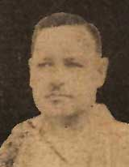

|
j
a v a s c r i p t |
March 13, 1943

Maj. Charles J. Cushing
Tribune: "Guerrilla Chief Surrenders Unit ... Major Charles Joseph Cushing Ends Hostile Activities in Pangasinan — USAFFE Remnants in Bataan also give up." The latest guerilla leader to "surrender," Major Cushing "offered his services to help build the New Philippines." The truth is they were all captured; but Japanese propaganda requires that they give up willingly, receive benevolent treatment, become converts, and make the appropriate statements of regret. Three Cushing brothers were involved in mining at the outbreak of the war before becoming guerilla leaders. Walter Cushing had already been killed by the Japanese. Trapped in a house, he refused to surrender and fought it out. The Tribune names other guerrilla leaders who surrendered before Cushing: Miguel Acosta, Lucius Hull, Felipe Cuison, Federico Dulliente, Posadas, Tomelden and Malpaya. Captured, that is. I put up Piñol's aerial intact with insulators today but could only get music at 21:00. Tried again later, fell asleep and missed the news. |
|
|
|
|